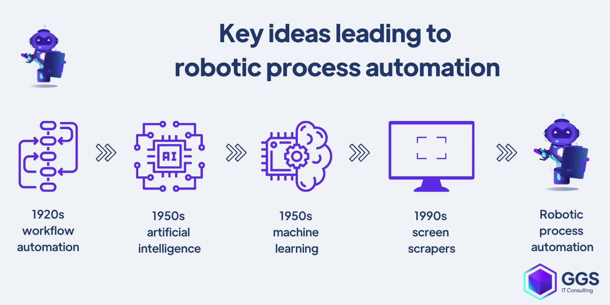

What is RPA?
Robotic process automation (RPA) is a form of business process automation that is based on software robots (bots) or artificial intelligence (AI) agents.It is sometimes referred to as software robotics (not to be confused with robot software)is a technology that uses software robots to automate repetitive tasks and processes in business operations. RPA bots can perform tasks such as data entry, data extraction, form filling, and more, freeing up human employees to focus on more strategic and value-added activities. ust like people, software robots can do things like understand what’s on a screen, complete the right keystrokes, navigate systems, identify and extract data, and perform a wide range of defined actions. But software robots can do it faster and more consistently than people, without the need to get up and stretch or take a coffee break. When robots do these types of repetitive, high-volume tasks, humans are freed to focus on the things they do best and enjoy more: innovating, collaborating, creating, and interacting with customers. Enterprises get a boost too: higher productivity, efficiency, and resilience. It’s no wonder that RPA is rewriting the story of work.RPA tools have strong technical similarities to graphical user interface testing tools. These tools also automate interactions with the GUI, and often do so by repeating a set of demonstration actions performed by a user. RPA tools differ from such systems in that they allow data to be handled in and between multiple applications, for instance, receiving email containing an invoice, extracting the data, and then typing that into a bookkeeping system.A principal barrier to the adoption of self-service is often technological: it may not always be feasible or economically viable to retrofit new interfaces onto existing systems. Moreover, organisations may wish to layer a variable and configurable set of process rules on top of the system interfaces which may vary according to market offerings and the type of customer. This only adds to the cost and complexity of the technological implementation. Robotic automation software provides a pragmatic means of deploying new services in this situation, where the robots simply mimic the behaviour of humans to perform the back-end transcription or processing. The relative affordability of this approach arises from the fact that no new IT transformation or investment is required; instead the software robots simply leverage greater use out of existing IT assetsConversely, however, some analysts proffer that RPA represents a threat to the business process outsourcing (BPO) industry.[7] The thesis behind this notion is that RPA will enable enterprises to "repatriate" processes from offshore locations into local data centers, with the benefit of this new technology. The effect, if true, will be to create high-value jobs for skilled process designers in onshore locations (and within the associated supply chain of IT hardware, data center management, etc.) but to decrease the available opportunity to low-skilled workers offshore. On the other hand, this discussion appears to be healthy ground for debate as another academic study was at pains to counter the so-called "myth" that RPA will bring back many jobs from offshore.

Benefits of RPA
- Increased Efficiency
- At times, companies need the ability to perform processes faster to help meet above-average demand. Workflow automation software increases productivity by increasing the speed and accuracy of your business processes, and by scaling automated processes within your organisation. An increase in productivity means a greater ability to serve and grow your organisation and customer base.
- Error Reduction
- RPA can be programmed to perform tasks like data collection from various sources, such as transaction logs, databases, or financial records. By automating these tasks, the process becomes more efficient and less error-prone.
- Cost Savings
- Robotic Process Automation (RPA) is poised for tremendous growth. In 2020, the global RPA market was worth $1.23 billion. By 2030, that figure is projected to be $13.39 billion, a growth factor of more than 10. And when you look at the benefits of RPA, it’s easy to understand why
- Enhanced Accuracy
- By automating calculations, RPA reduces the risk of human error and ensures consistent and accurate results. Additionally, RPA enables faster processing times, as it can perform calculations at a much higher speed than manual methods. This not only saves time but also improves productivity.
- Improved Compliance
- The compliance landscape is becoming increasingly complex with time. The constant changes in the regulatory environment, a lack of understanding of compliance measures, limited technology capabilities, and the uncompromising internet restrictions are the primary reasons why companies are looking for strong compliance measures.
How RPA Works
RPA software robots are trained to mimic the actions of human users by interacting with applications and systems through the user interface. They can work 24/7 and are highly adaptable, making them ideal for various industries and tasks. RPA works by accessing information from your existing IT systems. There are numerous ways that RPA tools can integrate with your applications. One option is through connections to databases and enterprise web services in the backend. Another is through front end or desktop connections that take multiple forms. Which way is best? It depends on your enterprise and the needs that the solution will address. With backend connectivity, your automation accesses systems and services under the control of a process automation server. This is most commonly used for unattended automation, where your software robots carry out back-office tasks such as processing insurance claims at scale and with minimal to no employee intervention As soon as the customer generates an email request, all these steps will be performed automatically by RPA bots, and there will be no need for human input. Preparing and cleansing data in a structured format helps the software bots to easily copy and paste data from one field to another without oversight.How robotic process automation works doesn't have to include coding. As a result, it is easier for a business to train or acquire RPA engineers—and experience with one platform usually translates well to other options. Is a drag-and-drop interface limited? Not at all: With support for virtually every kind of task that you can imagine, it is simple for a trained engineer to configure an automated workflow in one of these process builders. Every command or rule option has an extensive number of customizable settings to configure to specific needs. When you zero in on highly specific rules to define the process, you activate automation and all its benefits.Attended RPA works side-by-side with human counterparts, often in real time, to provide the information that an employee needs to complete their tasks.Attended RPA is the best solution for tasks that your front-office staff encounters, such as retrieving customer information from different databases quickly. Attended RPA often has more limited use cases and may function not within all business systems but rather on one user or team's workstation. The result is less stress for staff and improved customer service.Unattended RPA does not require the same level of oversight or collaboration with the software's human counterparts. These solutions operate on a much larger scale to automate back-end processes that require no human intervention. You can configure these bots to run on a schedule or specific system triggers; they all follow rules to execute a process from start to finish.
